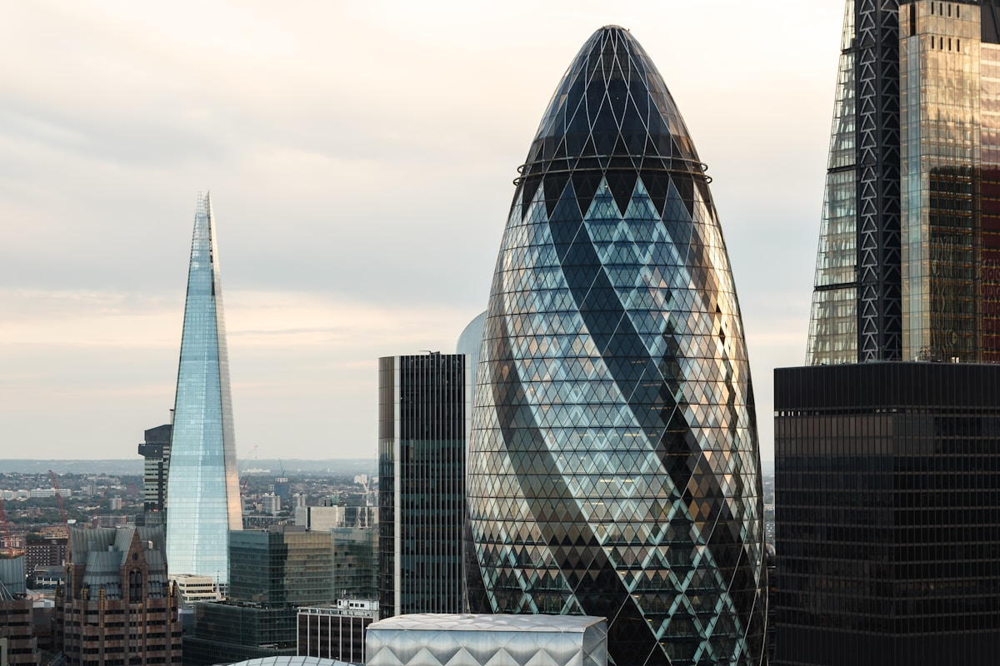
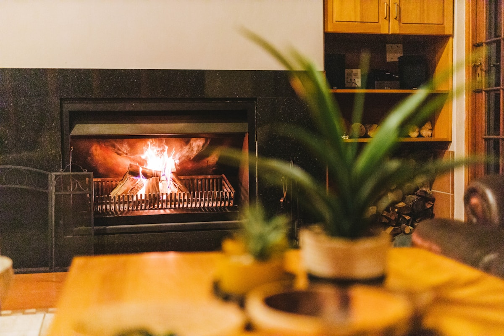

Build Autonomous Wealth Through Buy-to-Let
A new paradigm of property-backed wealth. Engineered for scale. Built for generations. The time to build is now.
Engineered over a thirty-year horizon — long enough for compounding to do the work, short enough to remain answerable to a generation.
Steady rental income, paired with property appreciation. Two reinforcing currents — not one stream subject to one weather.
Every acquisition, every decision: filtered through algorithmic analysis across dozens of variables. Conviction grounded in evidence.
The destination is autonomy. A system that compounds without you tending it — wealth that works while you don't.
Compounding doesn't stop when you do. The system keeps building — quietly, indefinitely, without permission.
A System Engineered for Autonomous Growth
Self-Sustaining Ecosystems
Fully optimised buy-to-let ecosystems where strategic acquisition, automated cash flow, and scalable growth converge.
Explore Vision →Dual Growth Path
BTL investments deliver steady rental income and property appreciation, enhanced by strategic mortgage financing.
Explore Paradigm →
Systematic Scaling
Data intelligence and automation transform real estate into a self-sustaining financial instrument at scale.
Explore Philosophy →Intelligence-Driven Acquisition
Extensive algorithmic analysis across dozens of variables identifies optimal acquisitions and maximises returns.
Explore Intelligence →
Tenant-Centric Growth
Tenant satisfaction drives long-term occupancy and portfolio stability, forming the cornerstone of sustainable wealth.
Explore Tenant Care →Ready to Build Generational Wealth?
To discuss how Zaminyar's autonomous wealth architecture can be applied to your property portfolio: